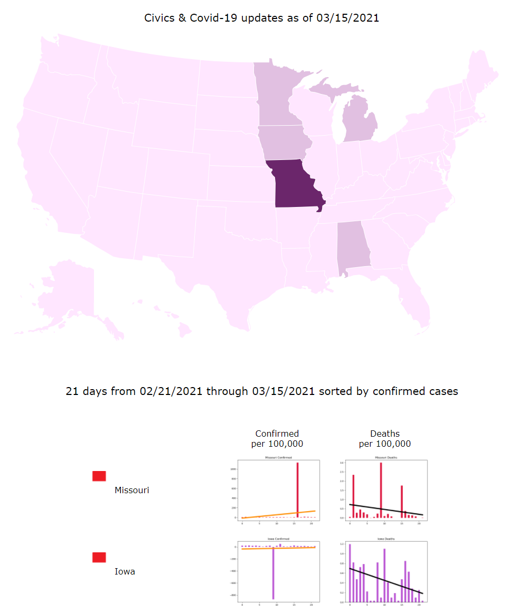
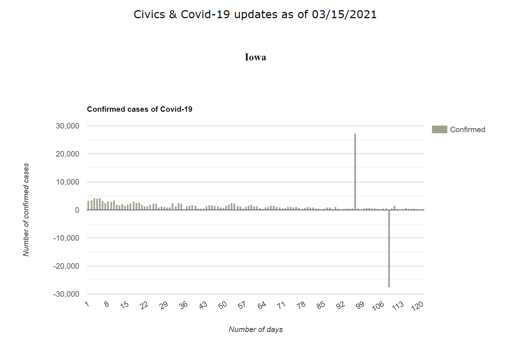
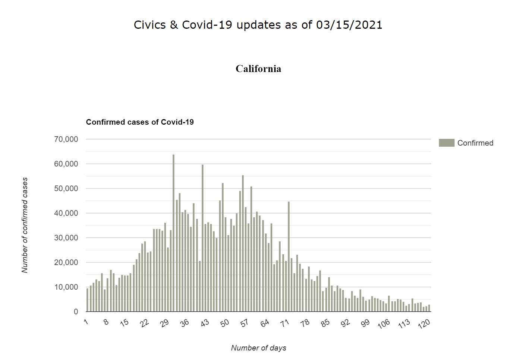
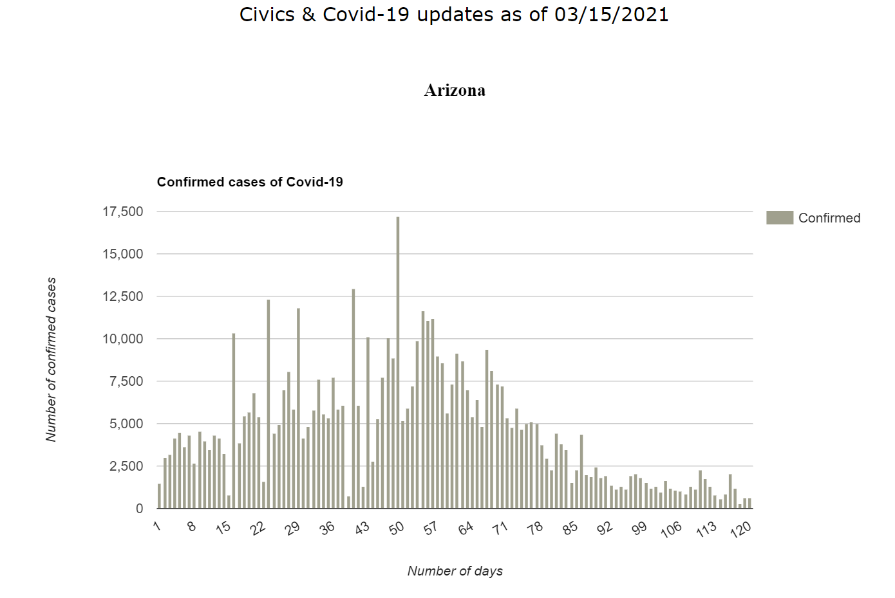
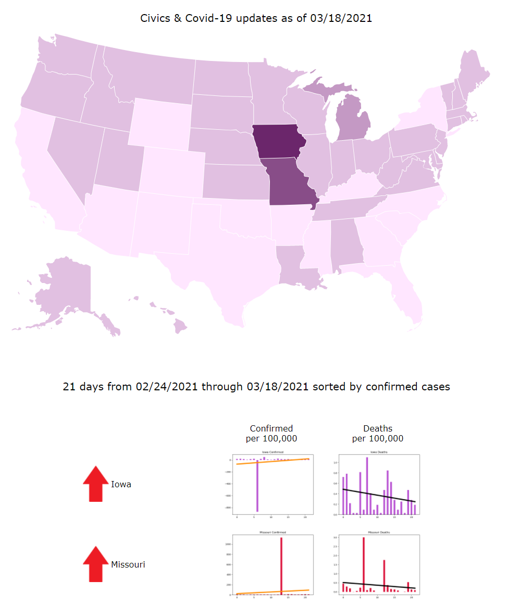
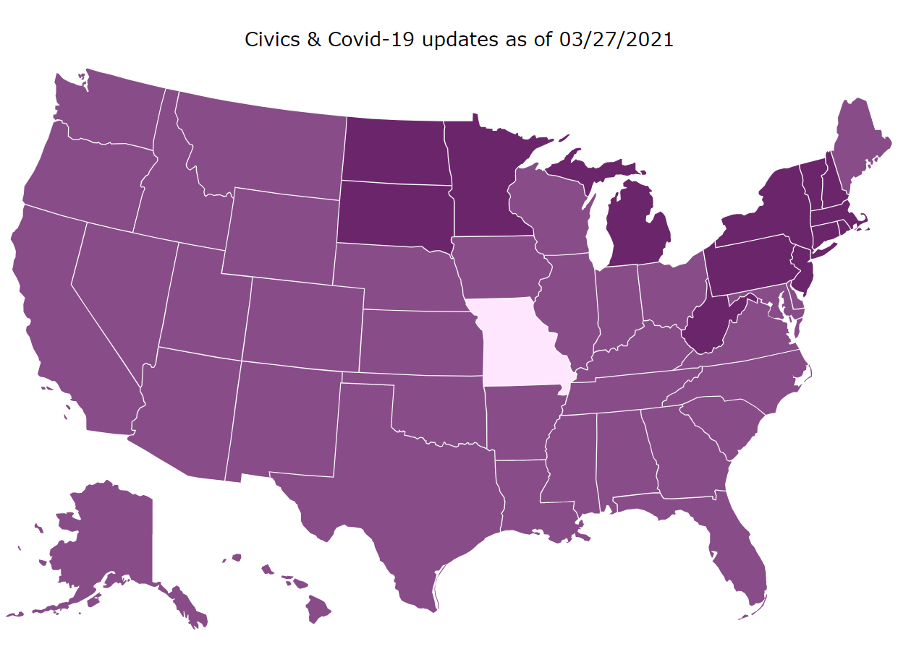
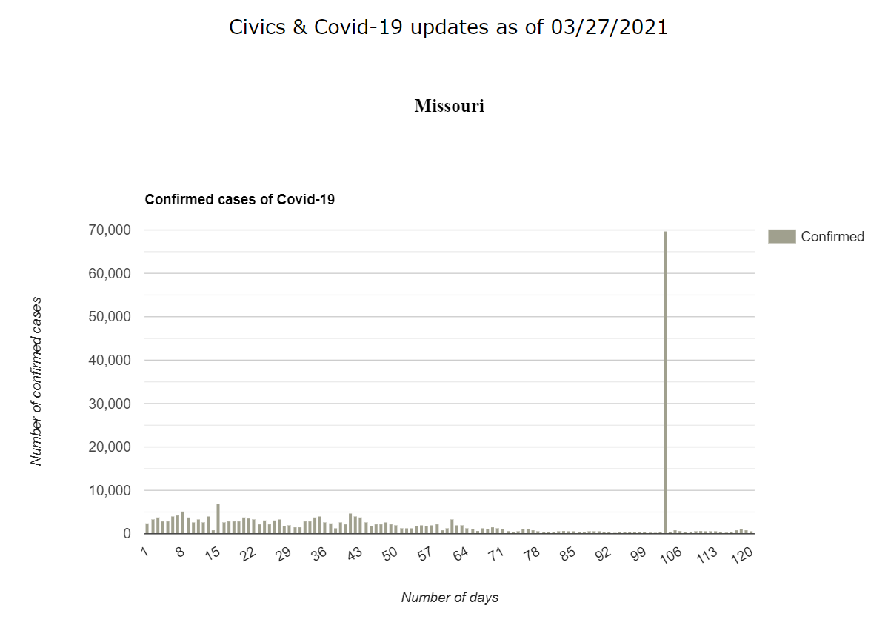

The objective of this exercise is to discover the types of questions a project manager should ask
when evaluating data produced by machine learning or AI.
The data and examples for this exercise are from a data engineering project that used simple linear regression. The Civics & Covid-19 project was undertaken because Covid-19 has been perceived and managed differently across the United States. The aim has been to provide data to support research for understanding which political policies best protect the health of USA citizens.
The data and examples for this exercise are from a data engineering project that used simple linear regression. The Civics & Covid-19 project was undertaken because Covid-19 has been perceived and managed differently across the United States. The aim has been to provide data to support research for understanding which political policies best protect the health of USA citizens.
Review the material below then make a list of questions based on what you observe:
- Do the graphs look like what you expected?
- Do the maps look like what you expected?
- Is the data credible? How do you know?
- Is the data presented in an easy to understand format?
- Take a look at maps and graphs from March 2021. The colors were changed to make it easier to see the data reporting inconsistencies. How would you explain this to your stakeholders? Observations about USA political policies in 2020
Observations about USA political policies in 2020
Medium article: How You Vote May Affect Your Health


Observations about USA political policy changes in 2021
Medium article: How You Vote Affects Your Health
- Do the graphs look like what you expected?
- Do the maps look like what you expected?
- Is the data credible? How do you know?
- Is the data presented in an easy to understand format?
- Take a look at maps and graphs from March 2021. The colors were changed to make it easier to see the data reporting inconsistencies. How would you explain this to your stakeholders?
2020
Observations about USA political policies in 2020
Medium article: How You Vote May Affect Your Health
2021
Plots showing inconsistent reporting of data:
Observations about USA political policy changes in 2021
Medium article: How You Vote Affects Your Health
March 15, 2021




March 18, 2021

March 27, 2021


How It Works
Data engineering is the art of collecting, organizing, and standardizing data for input into AI algorithms
Ranking the number of cases or deaths
Python is a programming language that has a toolkit called, SciPy, short for Science Python. SciPy has tools, such as stats.linregress for computing linear regression. To rank States in the United States for the Civics & Covid-19 project, we used SciPy to compute the least-squares linear regression on raw data. The stats.linregress calculation produces a slope and an intercept that can be used to draw a line on a graph. We used the slope to rank confirmed cases and deaths. Here's a code snippet:
slope, intercept, r, p, std_err = stats.linregress(days, c) # days is a numpy array listing values from 1-21 # c is a numpy array with the number of cases or deaths
Comparing data
Per 100,000 is commonly used to compare data because the numbers can be more easily ranked than percentages:
confirmed cases / population * 100,000 = confirmed cases per 100,000
deaths / population * 100,000 = deaths per 100,000